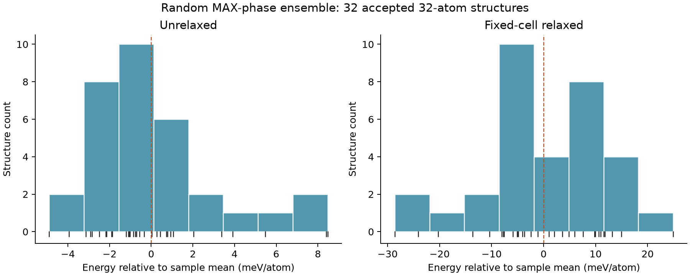

32 distinct configurations of (Ti₀.₅Zr₀.₅)₂(Al₀.₅Si₀.₅)C; 32 atoms per configuration. Random selection seed 17 from 128 symmetry-distinct candidates generated with SA seed 42. First-shell Ti–Zr, Al–Si and Ti–Si targeted SRO errors are exactly zero.
Fixed 2 × 2 × 1 parent cell, lengths 6.10, 6.10, 13.60 Å and basal angle 120°. MACE via MaterialsFramework; CPU float64, FIRE atomic relaxation, force tolerance 0.03 eV/Å, at most 300 steps. Accepted 32/32 with force convergence and retained parent-site mapping. Both distributions below use the same accepted structures.
| Stage | N | Mean (eV/atom) | Population SD (meV/atom) | Range (meV/atom) |
|---|---|---|---|---|
| Unrelaxed | 32 | -7.915580 | 3.07 | 13.36 |
| Fixed-cell relaxed | 32 | -8.175005 | 11.71 | 53.53 |

Pilot distribution conditional on a bounded SA-generated candidate pool. This is not uniform sampling of all labeled occupations, a Boltzmann distribution, or a thermodynamic uncertainty estimate. The 32 selected structures are distinct; the sampling fraction is 25% of the 128-member pool. Histogram bars depend on bin choice; individual energies are marked along the axis. MACE predictions use a prescribed common lattice, not a validated alloy equilibrium geometry. Initial occupation-based SRO equality does not establish equal distance-based SRO after relaxation.
Excluded IDs: []. Model SHA-256: 2ddb079cee0e131eaaf6912ba581b394551ead283e95c99cfe78c605d10b5736.